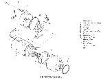
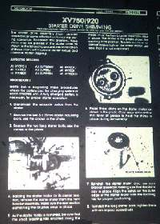
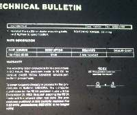
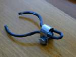
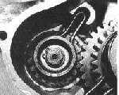
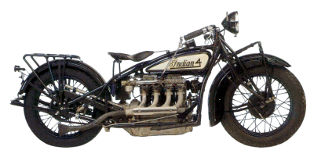
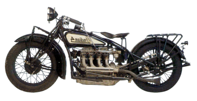

¶

A lot of Yamaha Virago models have a problem with their starters. Especially the twin rear shock models. Hit the button and it sounds like a bunch of marbles are knocking around in your crankcase. Yamaha put out all kinds of cures that sometimes worked and sometimes didn't. Most of those cures involved adding shims to the starter or changing this gear or that. The factory has a shim kit and apparently it does work on some bikes. It seems they've changed the starter too. I took some pictures of the Yamaha updates on my micro-fiche and here they are. They are big files because I wanted to give you the best picture, so give them time to load. It would seem that you must add these shims in the starter. Yeah, I know. But you're the one wanting to quiet this pig down... and a lot of guys and gals really love these bikes. Virago Starter Update #1 |
 Virago Starter Update #2 |
Now I have never really worked over a Virago starter because everyone wants it done quick, cheap, and with an iron clad guarantee. That just ain't gonna happen, at least not with me. So no one has ever wanted to pay me to really do a job on one.
 

 |
 |
Copyright © 1999-2004 dansmc.com. All rights reserved.